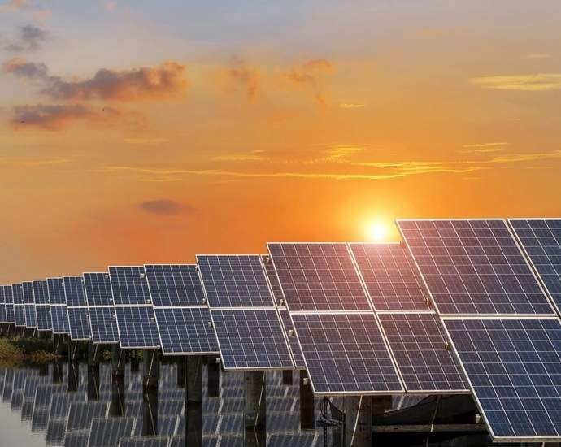

Soluções de Energia Renovável

Energia Solar
Painéis solares captam a luz do sol para gerar eletricidade, alimentando sistemas de irrigação, iluminação e máquinas agrícolas. São ideais para áreas rurais com alta incidência solar, reduzindo custos e emissões.
Energia Eólica
Turbinas eólicas de pequena escala geram energia limpa em regiões ventosas, fornecendo eletricidade para fazendas remotas e complementando outras fontes renováveis.

Energia de Biomassa
Resíduos agrícolas, como esterco e restos de culturas, são convertidos em biogás ou biofertilizantes por meio de biodigestores, promovendo uma economia circular e energia sustentável.